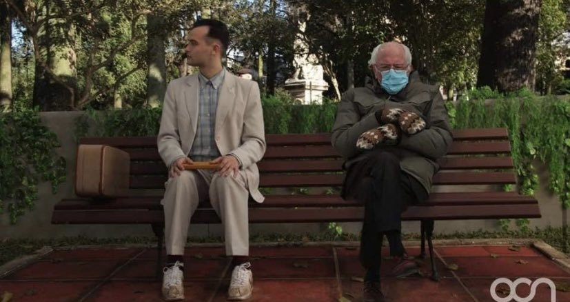
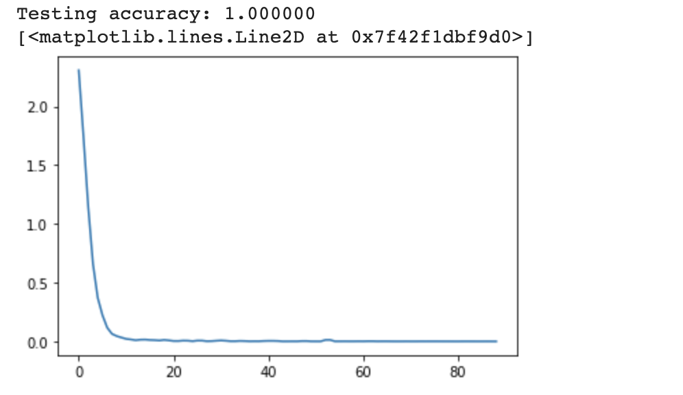
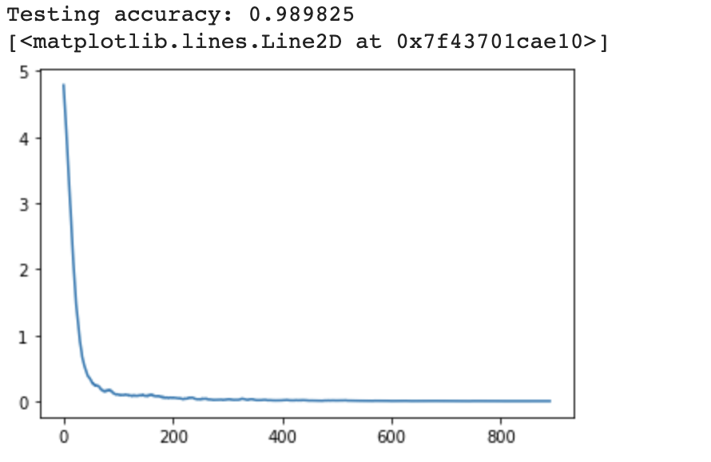
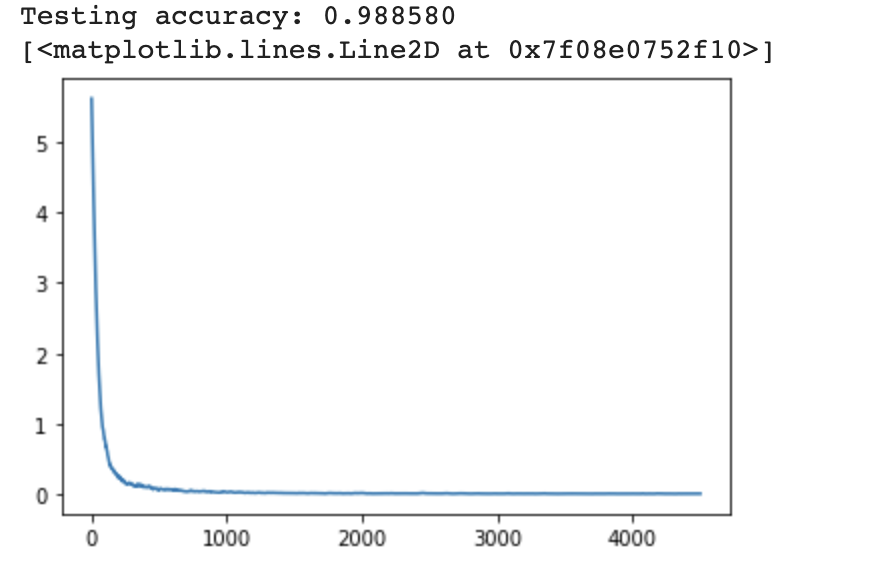

CSE 455: Computer Vision Final Project
Problem Description
With the rise of social media, we've all seen the creation and evolution of memes. Beginning humbly with LOLcats, rage comics, and new grounds forums, memes have become a form of modern folklore. They can pop up in a moments notice as has been seen many times with Bernie Sanders (Most recently with his outfit and expression at President Biden's innauguration)
As such, I thought it would be interesting to attempt to track meme trends on social media. A daunting task for an individual but trivial for a well trained neural network. Here is this project on github.
Previous work
This Neural Network is based on the pretrained resnet18 Neural Network provided in the pytorch python library. Along with this, I used example training and accuracy methods written by Joseph Redmon in a Transfer learning lecture he gave while I was taking CSE 455 at the University of Washington. This project would also not have been possible without numerous stackOverflow answers about writing bash scripts. trim.sh is almost completely copied from this answer with minor modifications made by me.
My Approach
I implemented this project in 3 different versions. This was, honestly, because I wasn't certain that any of this would work. In V1, I hard-coded 15 labels and scraped the images for those 15 labels. While I forgot to save a version of the source code for V1, I still have the ipnby for V1. In V2, I attempted to scrape both the labels and the images. My goal was to get ~500 labels, but some of my scripts failed and I only got 160 useable labels. I decided to train the neural net on these any way to see if I was wasting my time. After finding some success, I moved on to V3 which ended up with 419 labels.
With the pretrained resnet18 model, I removed the final classification layer and replaced it with one that had as many outputs as meme labels and trained with 10 or 20 epochs (depending on the version) and a constant learning rate of 0.01.
Datasets
I was unable to find a suitable dataset, so I created my own. To do this I used BeautifulSoup, a python html processing library, to scrape data from imgflip.com/, a website that offers meme generating services.
First, I used img_flip_template_scrapper.py to find meme labels from imgflip.com/memetemplates. These labels are output to memeLabels.json for the next scrapper to access.
After I had the labels for the meme formats, I used img_flip_imgs_scraper.py to scrape imgflip.com/meme/<meme label> to find links for examples of that meme format and create memes.csv.
Once this csv file was created i used meme_downloader.py to download 100 images per label and create the file structure necessary for the pytorch data loader. This also creates fetchedMemes.json which is a record of which labels the program was able to successfully download images for. Some labels in memes.csv failed for many reasons (for example, some were meme formats that are gifs). While downloading, this program decides to put a downloaded image in train/<meme label>/ 80% of the time and in test/<meme label>/ 20% of the time. I decided that this would be a suitable split given that we will have 100 images per label total.
Next, I needed to do some file validation as some of the curl commands failed. This is done by valImages.sh which checks for empty/invalid jpeg's and removes them using imagemagick a handy bash image processing library.
Finally, some labels just didn't have enough samples to make it worth training. So i used trim.sh to count the number of files in train/<meme label>/ and if it's fewer than 20, it deletes that label from train/ and test/ (!important if you run this file, only run it when your pwd is in train/. otherwise there are folders in test/ that will be incorrectly deleted.)
However, this was just the files for meme formats. I also included a "not-a-meme" label as when I deploy this neural network, it will have to be able to know that some images are, in fact, not memes. To do this I use not_meme_download.py to create the necessary folders and download 300 random images from the open images validation dataset. The links of which are contained in open-images-dataset-validation.tsv
Results
Results for V1 (10 epochs):
Results for V2 (10 epochs):
Results for V3 (20 epochs):
The pretrained resnet18 model worked incredibly for all 3 versions. You can see that testing accuracy declines between versions but that is to be expected as the dataset and number of labels increases. Plus, 98%+ accuracy is magnitudes higher than what I expected going into this.
Problems in development
Pytorch was a surprisingly easy library to work with in this case. So, one problem is that this project was much easier than I was expecting and may not been as interesting as i'd hoped. Because the machine-learning aspect of this project was so easy, the dataset creating was much, MUCH, harder. I ran into many problems that took hours to fix. Some wouldn't pop up until the model was almost done training (thus valImages.sh came to be).
Next Steps
Once this quarter is over, I plan to get this model running on a server and use Reddit's API to query posts made to Reddit and track how many of each meme format is posted every day. Then I'll probably just leave this running as long as I can. I also plan to validate ~200 of these by hand to see if the model is truly working as well as the test accuracy would suggest. I've done this with ~25 memes so far and it hasn't gotten one wrong yet! Lastly, I want to figure out how to add new meme formats as they arise.
Approach Retrospection
This problem probably didn't warrant as complex as a model as resnet18. This project may have been more educational for me if I initially tried to create my own CNN to solve the problem. Further, I am worried that with the 20 epochs i used in V3, there may be some overfitting to this data set that will hinder its performance when deployed. Nonetheless, I am very happy with the results and can't wait to see what kind of data I will have in a years time!